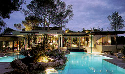
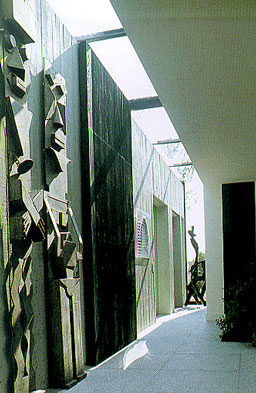
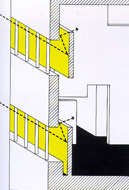
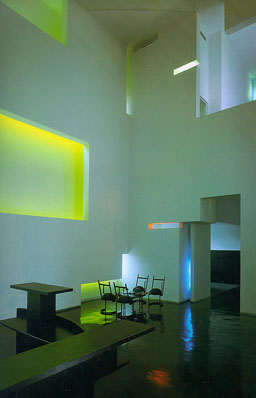

A house in Saint-Jean-Cap-Ferrat, France
Luc Svetchine

Houses by the sea
Telleri |
This residence containing of reception and
living areas, private quarters and guest rooms, is situated up
in the hills above Saint-Jean-Cap-Ferrat. The construction of
concrete has been fragmented to incline the hill. The reception
and the living rooms are ordered around the pool and the terraces.
The private quarters and guest rooms are hidden behind large
concrete walls. Overhanging balconies and narrow vertical openings
provide for views of the landscape. On the picture on the right
you see light coming from the roof and side-wall brushing past
sculptures in the back-wall. |
 |
D.E. Shaw and Company Office, New York, New York, 1991-1992
Steven Holl

Contemporary American Architects Volume II
Philip Jodidio
Taschen |
This office is located on the two top floors
of a skyscraper. The company makes extensive use of computers
so direct daylight is not desired. Colour was applied to the
backs of surfaces invisible for the viewer inside. Daylight coming
from outside fissures on these walls and reflects via other walls
into the office, so direct daylight never reaches the inside
of the office. You can see this clearly on the pictures. |
 |